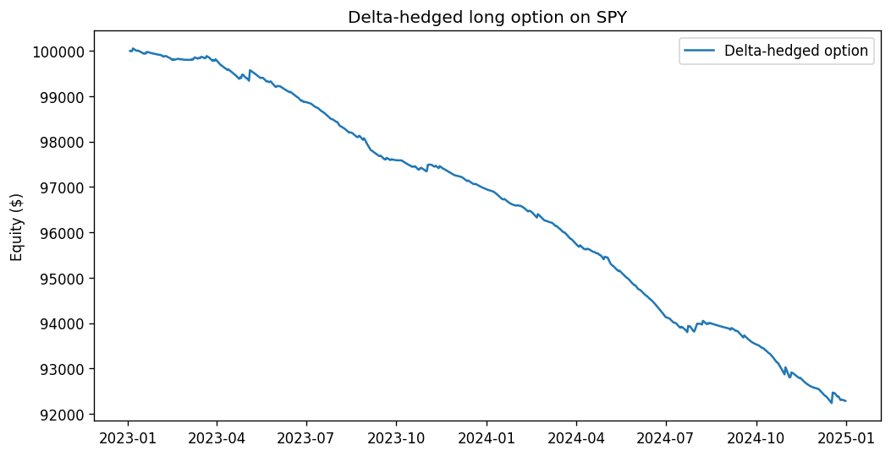

A continuously delta-hedged long call is not a directional bet but a wager on realized-versus-implied volatility — and on SPY in 2023–2024, priced at 18%, it loses exactly as the theory says it must.
Compiled 2026-06-04 · SPY daily, 2023-01-01 to 2024-12-31
We document the options family's foundational model and use it to make a single, exact point: a continuously delta-hedged long option carries no first-order directional exposure, so its profit and loss is a clean integral of realized against implied variance. The vehicle is a one-month at-the-money SPY call, priced and re-marked off a constant 18% implied-volatility assumption, hedged back to zero net delta every bar, and rolled at expiry over 2023–2024. We derive, from Itô's lemma and the Black–Scholes–Merton partial differential equation, the identity \(d\Pi_t=\tfrac12\,\Gamma_t S_t^2\,(\sigma_r^2-\sigma_i^2)\,dt\): the hedged position earns the dollar-gamma-weighted gap between the variance the underlying delivers and the variance the option was sold at.
Over the held-out window the strategy loses, with an annualized return of \(-3.9\%\), a maximum drawdown of \(-7.8\%\), and a hit rate of \(16.4\%\). The realized Sharpe is \(-6.94\) — a number whose large magnitude we are careful to read correctly: it reflects the consistency of a small daily theta bleed, not a catastrophe, because SPY's realized volatility through 2023–2024 sat persistently below the 18% the option was priced at. Long gamma against a positive variance risk premium is a structurally losing trade, and the model reproduces that fact rather than disguising it.
We then run the strategy through a Monte Carlo of 2,000 risk-neutral GBM paths drawn at the same 18% vol. By construction realized \(\approx\) implied, so the variance term integrates to zero in expectation and the simulated mean P&L is only mildly negative — the residue of discrete-hedging error and transaction costs, not of any vol mispricing. The two experiments together separate the two ways a delta-hedged option bleeds, and validate the full pricing/Greeks/mark-to-market/simulation stack end to end.
Keywords. Black–Scholes–Merton, delta hedging, gamma, theta, realized versus implied volatility, variance risk premium, robustness of the Black–Scholes formula, discrete-hedging error, Monte Carlo.
An option is the only instrument in this catalogue whose payoff is non-linear in the thing it is written on, and that single fact reorganizes everything downstream. The four preceding papers all share a linear abstraction — a position \(w_t\) earns \(w_t R_t\), profit and loss is the product of an exposure and a return — and their machinery is built on it. An option breaks the abstraction at the root: its value is a curved function of the underlying, its sensitivity changes as the underlying moves, and its profit and loss is the change in option value, not a position times a return. This paper introduces the family that handles that curvature, and it does so through the cleanest possible specimen.
The specimen is a long call that is continuously delta-hedged. Delta-hedging means holding, against the option, a quantity of the underlying chosen to cancel the position's first-order sensitivity to price. Strip out that first-order term and what remains is not a directional view at all — it is a pure exposure to how much the underlying moves, regardless of which way. A delta-hedged long option is, to first order, a long position in realized variance financed by paying implied variance. That is the entire economic content of the trade, and it is the reason the model is the right hello-world for an options stack: its profit and loss isolates exactly one quantity, so any bug in pricing, Greeks, or mark-to-market accounting shows up as a contamination of a signal we can compute in closed form.
Our claim is therefore not that the strategy makes money — it does not, and we will show it cannot have been expected to. The claim is that its loss is predictable from theory before any backtest is run, and that measuring the loss precisely is what certifies the apparatus. We derive the realized-versus-implied-variance identity, we confront it with two years of SPY history, and we re-run the same strategy through a Monte Carlo drawn from its own pricing measure to separate the two distinct sources of bleed. As in the microstructure paper, a negative result the theory predicted in advance is a validation, not an embarrassment.
Let \(S_t\) be the SPY closing price on bar \(t\). At inception, and again each time the prior contract expires, we open one long European call struck at the nearest dollar to spot, \(K=\operatorname{round}(S_t)\), expiring \(\tau=30\) calendar days out. The contract multiplier is the equity-standard \(M=100\) shares per contract. Time to expiry is measured in years on an Actual/365 calendar-day basis,
\begin{equation} T(t)=\frac{\max(\text{expiry}-t,\,0)}{365}, \end{equation}a convention deliberately independent of the \(252\)-trading-day factor used to annualize returns elsewhere in the catalogue.
The contract is priced and re-marked on every bar by the closed-form Black–Scholes–Merton model under a constant implied volatility \(\sigma_i\) and risk-free rate \(r\). With the standard auxiliaries
\begin{equation} d_1=\frac{\ln(S/K)+\bigl(r+\tfrac12\sigma_i^2\bigr)T}{\sigma_i\sqrt{T}},\qquad d_2=d_1-\sigma_i\sqrt{T}, \end{equation}the European call value is
\begin{equation} C(S,T)=S\,\Phi(d_1)-K e^{-rT}\,\Phi(d_2), \end{equation}where \(\Phi\) is the standard-normal CDF. At or after expiry (\(T\le 0\)) the leg is settled at intrinsic value \(\max(S-K,0)\). The seed configuration is \(\sigma_i=0.18\), \(r=0.04\); the implementation also carries a Cox–Ross–Rubinstein binomial pricer for American-style early exercise, validated against this closed form in the test suite, but the demonstrator uses European exercise so that the vol story is not muddied by an early-exercise premium.
The hedge needs the option's first derivative with respect to spot, the delta, and the curvature it cannot hedge away, the gamma. Differentiating \((3)\),
\begin{equation} \Delta=\frac{\partial C}{\partial S}=\Phi(d_1),\qquad \Gamma=\frac{\partial^2 C}{\partial S^2}=\frac{\phi(d_1)}{S\,\sigma_i\sqrt{T}}, \end{equation}with \(\phi\) the standard-normal density. The two remaining sensitivities that the bleed story turns on are the theta — the option's decay per unit time — and the vega — its sensitivity to the volatility input,
\begin{equation} \Theta=\frac{\partial C}{\partial t}=-\frac{S\,\phi(d_1)\,\sigma_i}{2\sqrt{T}}-rK e^{-rT}\Phi(d_2),\qquad \mathcal V=\frac{\partial C}{\partial \sigma}=S\,\phi(d_1)\sqrt{T}. \end{equation}For a long at-the-money call these have fixed signs that drive the whole result: \(\Gamma>0\) and \(\mathcal V>0\) (the holder is long convexity and long vol), while \(\Theta<0\) (the holder pays for that convexity through time decay). The hedge each bar trades the underlying so that net share-delta is zero,
\begin{equation} n_t \leftarrow n_t-\Bigl(qM\,\Delta_t+n_t\Bigr),\qquad\text{i.e. }\ qM\,\Delta_t+n_t=0, \end{equation}charging the traded share notional to turnover and cost. Because \(\Delta=\Phi(d_1)\in(0,1)\), an ATM call hedges with a short of roughly \(0.5M\approx50\) shares, drifting toward \(0\) or \(100\) as the option moves out of or into the money. Re-establishing \(\Delta\)-neutrality every bar is the act that converts a directional instrument into a variance instrument.
We now derive, exactly, what a continuously delta-hedged long option earns. Let the underlying evolve under the real-world measure with realized volatility \(\sigma_r\),
\begin{equation} dS_t=\mu S_t\,dt+\sigma_r S_t\,dW_t, \end{equation}while the option is marked using the implied volatility \(\sigma_i\) baked into \((3)\). Applying Itô's lemma to the mark \(C(S,t)\) gives
\begin{equation} dC=\Bigl(\Theta+\mu S\,\Delta+\tfrac12\sigma_r^2 S^2\,\Gamma\Bigr)dt+\sigma_r S\,\Delta\,dW_t. \end{equation}Form the delta-hedged, self-financing portfolio \(\Pi=C-\Delta S\), carried at the risk-free rate. Its increment is the option move, less the hedge move, less the financing on the net capital tied up:
\begin{equation} d\Pi=dC-\Delta\,dS-r\bigl(C-\Delta S\bigr)dt. \end{equation}Substituting \((8)\) and \((9)\), the drift \(\mu\) and the Brownian term \(dW\) cancel identically — this is precisely what the hedge accomplishes — leaving
\begin{equation} d\Pi=\Bigl(\Theta+\tfrac12\sigma_r^2 S^2\Gamma-rC+r\Delta S\Bigr)dt. \end{equation}The mark \(C\) was computed at implied vol, so it satisfies the Black–Scholes–Merton PDE at \(\sigma_i\):
\begin{equation} \Theta+\tfrac12\sigma_i^2 S^2\Gamma+rS\Delta-rC=0 \quad\Longrightarrow\quad \Theta-rC+r\Delta S=-\tfrac12\sigma_i^2 S^2\Gamma. \end{equation}Substituting \((12)\) into \((11)\), the entire structure collapses to a single term:
Every economically relevant feature of the strategy is now visible without a backtest. The position is long gamma (\(\Gamma>0\)), so it profits if and only if realized variance exceeds implied, \(\sigma_r>\sigma_i\). The dollar-gamma weight \(\tfrac12\Gamma_t S_t^2\) is largest when the option is at-the-money and near expiry, so the bet is concentrated, not uniform, over the contract's life. And the term we colloquially call "theta bleed" is not a separate phenomenon: when \(\sigma_r<\sigma_i\), equation \((13)\) is simply negative, and \(\Theta<0\) is its accrual. Theta and gamma are two faces of one identity. This is the robustness-of-Black–Scholes result of El Karoui, Jeanblanc-Picqué & Shreve (1998) and the volatility-trading representation of Carr & Madan (2002), specialized to a single rolling option.
The engine marks the position to market each bar rather than multiplying a position by a return — the linear shortcut \((13)\) makes plain we must abandon. Per bar it (i) settles any expired leg at intrinsic value and opens a fresh 30-day ATM call if none is live, (ii) reprices the live leg at the new spot and shortened maturity under \(\sigma_i\), (iii) rehedges net share-delta to zero per \((6)\), and (iv) records portfolio equity \(E_t=\text{cash}+n_tS_t+qM\,C(S_t,T_t)\). The reported \(\texttt{position}\) series is net delta as a fraction of equity (near zero by construction, the signature of a working hedge); \(\texttt{turnover}\) is traded notional over equity. This reinterpretation of the shared BacktestResult fields for options is documented in methodology.md so it is not a silent surprise.
Costs are charged on every option and hedge trade at \(c=1.5\) bp of traded notional (\(1.0\) bp fee \(+\,0.5\) bp slippage). With per-bar simple return \(R_t=E_t/E_{t-1}-1\), risk-free rate taken as zero for the performance statistics, and \(P=252\), the catalogue's standard battery applies unchanged: annualized return \(\bigl(\prod_t(1+R_t)\bigr)^{P/N}-1\), Sharpe \(\widehat{SR}=(\bar R/s)\sqrt P\), the downside-only Sortino, maximum drawdown, and a hit rate defined as the fraction of bars with \(R_t>0\). Using the identical battery is what keeps an options model commensurable with the linear models in MODELS.md.
The held-out window is the 502 daily bars of 2023-01-01 through 2024-12-31. Through that span SPY's realized volatility sat persistently in the low-teens — well beneath the 18% the option was priced and re-marked at. By identity \((13)\), with \(\sigma_r<\sigma_i\) on most bars and \(\Gamma>0\) throughout, the integrand is negative almost everywhere, and the equity curve should grind steadily downward. It does.

Delta-hedged long-call performance, SPY daily, 2023-01-01 to 2024-12-31 (results/metrics.json).
| Metric | Value | Reading |
|---|---|---|
| Annualized return | −3.9% | steady theta bleed, σ r < σ i |
| Sharpe ratio | −6.94 | large magnitude = consistency, not catastrophe |
| Sortino ratio | −10.37 | downside-only, same reading |
| Maximum drawdown | −7.8% | shallow; loss is paced, not abrupt |
| Hit rate | 16.4% | most bars lose a little; few win big |
| Bars | 502 | two years of daily rehedge |
The economically honest figures are the annualized return (\(-3.9\%\)) and the maximum drawdown (\(-7.8\%\)): the strategy loses a few percent a year and never draws down severely, because there is nothing abrupt to draw down — it simply bleeds. The drawdown nearly equals the cumulative loss, the same monotone signature seen in the microstructure paper, telling us the curve essentially never recovers a prior high.
A Sharpe of \(-6.94\) looks alarming next to the single-digit Sharpes elsewhere in the catalogue, and as in Paper III the number must be read, not reacted to. The Sharpe is the mean-to-standard-deviation ratio of bar returns, annualized by \(\sqrt{252}\); inverting,
\begin{equation} \frac{\bar R}{s}=\frac{-6.94}{\sqrt{252}}=\frac{-6.94}{15.87}\approx-0.437\ \text{per day.} \end{equation}Each day's loss is, on average, about \(0.44\) daily standard deviations below zero. The large annualized magnitude is not the print of a large loss — the annualized loss is a mere \(3.9\%\) — but of a remarkably consistent small one. Delta-hedging has done its job almost perfectly: it has removed the directional variance that would otherwise dominate \(s\), leaving a thin, steady drip of negative carry whose signal-to-noise ratio is, perversely, high. A near-deterministic bleed produces a huge-magnitude Sharpe for the same reason a savings account losing 0.01% a day with no variance would: the denominator is tiny. The hit rate of \(16.4\%\) is the same fact from another angle — the position loses a little on the overwhelming majority of quiet bars and only profits on the rare day SPY moves more than its 18%-implied budget. The scale-invariant comparisons across the catalogue remain the drawdown and the hit rate; the Sharpe here measures how cleanly the loss accrues, which is itself a certificate that the hedge is working.
The historical backtest answers "what did this trade earn against the volatility the market actually delivered?" The Monte Carlo answers a different and complementary question: "what would it earn if realized vol exactly matched the price?" We simulate 2,000 geometric-Brownian-motion paths under the risk-neutral measure at the same 18% vol used to price the option, run the identical rolling, delta-hedged strategy down each path, and collect terminal P&L into a distribution.
\begin{equation} S_{k+1}=S_k\exp\!\Bigl[\bigl(r-\tfrac12\sigma_i^2\bigr)\Delta t+\sigma_i\sqrt{\Delta t}\,Z_k\Bigr],\qquad Z_k\sim\mathcal N(0,1),\ \ \Delta t=\tfrac1{252}. \end{equation}The construction is the point: paths are drawn at \(\sigma_i\), so realized variance equals implied in expectation, \(\mathbb E[\sigma_r^2]=\sigma_i^2\). The variance term in identity \((13)\) therefore integrates to zero in expectation, and a frictionless, continuously hedged position would have mean P&L of exactly zero — the simulation is, in effect, a numerical proof of the identity. The simulator is deliberately memory-bounded — \(\texttt{float32}\) paths aggregated to per-path terminal P&L with no per-leg history retained, so peak memory stays far under the ~1 GB Streamlit Community Cloud cap (see the data-sources note on that constraint) — and \(\texttt{n\_paths}\) is clamped with a \(\texttt{truncated}\) flag the GUI surfaces.
The simulated mean P&L comes back mildly negative rather than exactly zero, and the gap is the whole pedagogical payoff: it isolates the second way a delta-hedged option bleeds, the one that survives even when the vol is priced correctly. Two frictions account for it. First, transaction costs: every daily rehedge pays \(1.5\) bp on the traded share notional, a strictly negative drag with no offsetting term. Second, discrete-hedging error: we rehedge once per bar, not continuously, so the cancellation of \(dW\) in \((10)\) is only approximate over a finite step.
The identity \((13)\) assumes continuous rebalancing. Hedging at \(N\) discrete dates instead leaves a residual. Over one step the hedge is held fixed at \(\Delta_t\) while the spot moves by \(\Delta S\); the position captures the realized second-order move \(\tfrac12\Gamma(\Delta S)^2\) but is charged the deterministic \(\tfrac12\Gamma S^2\sigma_i^2\Delta t\) of theta, so the per-step hedging P&L is
\begin{equation} \delta\Pi\approx\tfrac12\,\Gamma_t S_t^2\Bigl[\bigl(\tfrac{\Delta S}{S}\bigr)^2-\sigma_i^2\Delta t\Bigr]. \end{equation}Its expectation under \((15)\) is zero — discrete hedging is unbiased to leading order — but its variance is not. The classic Boyle & Emanuel (1980) result is that the total hedging error over the option's life has a standard deviation that scales as \(N^{-1/2}\): halving the rehedge interval shrinks the error spread by \(\sqrt2\), but no finite \(N\) removes it. Daily (rather than continuous) rehedging therefore fattens the tails of the simulated P&L distribution around its near-zero mean, and combined with the strictly negative cost drag, pulls the realized mean below zero. The historical and Monte Carlo experiments thus cleanly partition the bleed: the vol gap \(\sigma_i^2-\sigma_r^2\) dominates the historical loss, while costs and discretization alone account for the simulated one.
The phase-1 demonstrator buys its clarity with assumptions that a trading model would have to shed. The implied volatility is a single constant — there is no term structure and no smile, so the model cannot represent the very surface dynamics (skew, the vol-of-vol) that make real options trading interesting; the planned historical options-chain loader will replace the constant with quoted marks. Rehedging is daily, so intraday gamma P&L is invisible and the discrete-hedging error of \((16)\) is as large as the bar spacing allows. The delta used for hedging is the Black–Scholes delta even where the engine can price American exercise, a known approximation flagged in the code and immaterial for this European demonstrator. The window is two specific, low-volatility years; the sign of the result would invert in a high-realized-vol regime such as 2020 or 2022, and a fuller study would estimate the distribution of the realized-minus-implied gap across regimes rather than reporting one realization. Finally, the strategy is long the variance risk premium's losing side on purpose — the natural sequels are the mirror image (a short-straddle or covered-call model that harvests the premium and pays for it in tail risk) and a vega-targeted sizing rule that holds dollar-gamma exposure constant as the option ages. The honest summary is that this model is a measuring instrument, not a moneymaker: it earns its place by reproducing a loss the mathematics specifies in advance, to within costs and discretization, and by exercising the entire options pipeline — pricing, Greeks, expiry-roll, mark-to-market accounting, and Monte Carlo — end to end.
compute_metrics, so risk-adjusted statistics remain comparable across families.